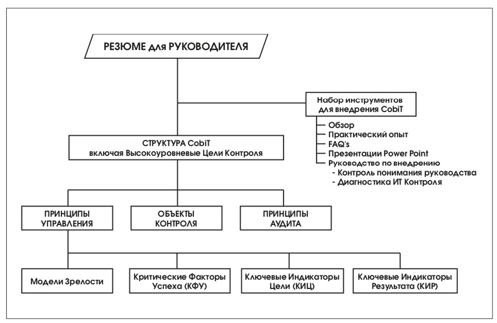

Структура и состав документов CobiT
Аббревиатура CobiT расшифровывается как контрольные объекты для информационных и смежных технологий. За этой аббревиатурой скрывается набор документов, в которых изложены принципы управления и аудита информационных технологий. CobiT позиционируется как открытый стандарт «де-факто», в настоящее время переживающий своё третье издание.

В состав стандарта входят шесть книг, ориентированных на разные аудитории:
- Резюме для руководителя. Описание стандарта CobiT, ориентированное на топ-менеджеров организации для принятия ими решения о применимости стандарта в конкретной организации.
- Описание структуры. Книга содержит развёрнутое описание структуры стандарта, высокоуровневых целей контроля и пояснения к ним, необходимые для эффективной навигации и результативной работы со стандартом.
- Объекты контроля. В книгу включены детальные описания объектов контроля, содержащие расшифровку каждого из объектов.
- Принципы управления. Книга отвечает на вопросы, как управлять ИТ, как правильно поставить достижимую цель, как её достичь и как проконтролировать полноту её достижения. Предназначена для руководителей ИТ-служб.
- Принципы аудита. Правила проведения ИТ-аудита. Описание того, у кого можно получить необходимую информацию, как её проверить, какие вопросы задавать. Книга предназначена для внутренних и внешних аудиторов ИТ, а также консультантов в сфере ИТ.
- Набор инструментов внедрения стандарта — практические советы по ежедневному использованию стандарта в управлении и аудите ИТ. Книга предназначена для внутренних и внешних аудиторов ИТ, консультантов в сфере ИТ.